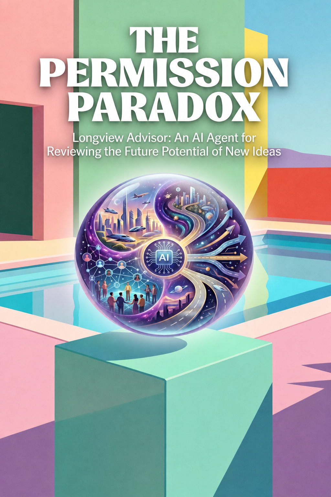

Executable Science & Research · Axiologic Research Editions
The Permission Paradox
Longview Advisor: An AI Agent for Reviewing the Future Potential of New Ideas
What if the next breakthrough disappears not through censorship, but beneath a polished summary and a reasonable score? The Permission Paradox asks how institutions can make uncertainty inspectable and buy decisive evidence before demanding belief—or dismissing possibility.
The future can be rejected before it is understood
Artificial intelligence lowers the cost of hypotheses, software, designs, simulations and persuasive explanations. That does not make every new idea good. It does create a discovery flood in which candidate novelty may arrive faster than laboratories, reviewers, investors, regulators and communities can test or absorb it.
The Permission Paradox names the problem that follows. An unfamiliar proposal needs evidence, users, benchmarks and credible sponsors before it can receive resources; but it often needs resources before it can create any of them. The farther a proposal is from the present, the fewer of the present’s credibility signals it can possess.
Longview: a second-order review workflow
The proposed Longview Advisor is not an autonomous funding authority or a finished product. It is a human-governed, falsifiable research programme for reviewing what would follow if an idea worked. Rather than producing a reassuring summary, it would preserve claims, alternatives, assumptions, evidence, scenarios, stakeholder effects and decisive tests as separate, inspectable parts of a living dossier.
That distinction matters when language models make every proposal sound complete. Longview is designed to surface missing implications and convert uncertainty into the cheapest responsible experiment, while preserving the human judgment needed to weigh safety, values, consent and authority.
Novel ideas do not deserve automatic acceptance, but consequential possibilities deserve more than automatic compression.
Permissionless proof, permissioned scaling
The book’s institutional proposal is deliberately asymmetric: reversible, instrumented inquiry should be easier to authorize; evidentiary requirements should rise with scale, irreversibility and exposure of non-consenting people. Small evidence tranches, patient renewal for difficult work, qualified lotteries and visible negative results can make funding follow the epistemic clock rather than a ceremonial calendar.
This is a practical invitation to founders, researchers, funders and public institutions. The question is not whether to worship novelty or defend precedent. It is how to build processes that can hear strange possibilities without surrendering care, evidence or the right to stop.